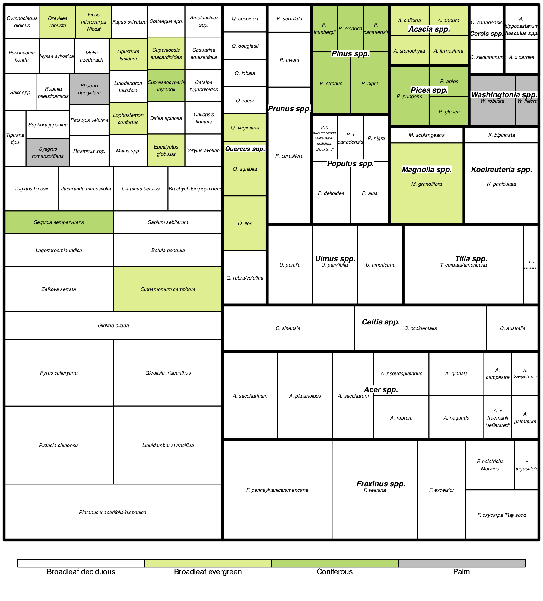
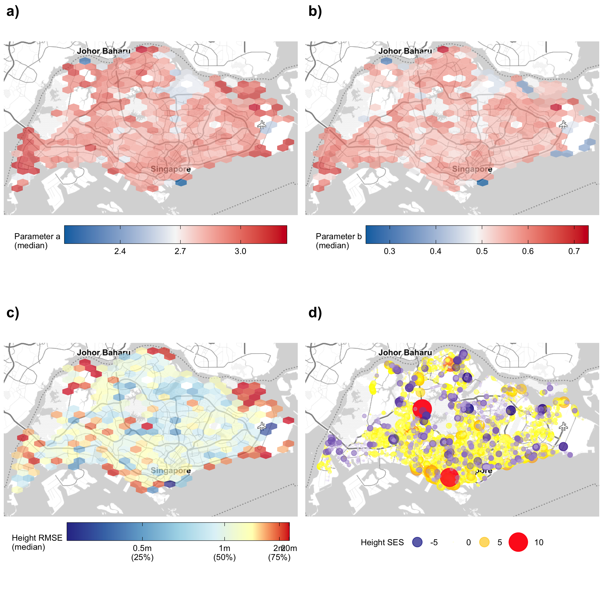
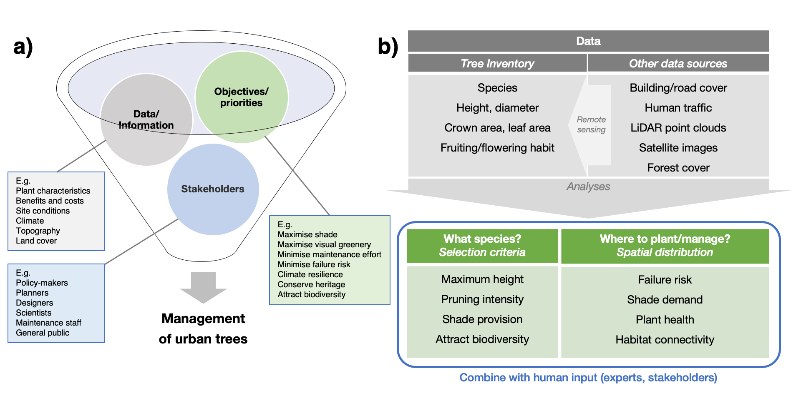

Trees are often the largest components of landscape greenery, and can help enhance the environmental quality of city landscapes. For example, trees can lower temperatures by providing shade, and reduce the risk of flooding by intercepting rainfall. Such benefits accumulate across wider areas, producing substantial effects that can help make cities more liveable and adaptable to climate change. Trees are thus a form of ‘natural capital’ that produce value for people.

Many cities have started to assess the status and health of these natural capital assets, which is an important step to incorporate the environment into holistic, national-scale planning. The downstream effects associated with trees often rely on their size and structure, which varies between species and changes over time. For practical purposes, however, measuring these multiple dimensions is usually not possible. Such values may have to be estimated indirectly using allometric relationships between the quantities of interest and easily-measured parameters such as a tree’s trunk diameter.

As part of my PhD work, I developed the R package allometree to build such allometric relationships, as well as a prototype web application demonstrating how the package may be used. If you’re interested, you may check out the following publication:
Song, X. P., Lai, H. R., Wijedasa, L. S., Tan, P. Y., Edwards, P. J., Richards, D. R. (2020), Height–diameter allometry for the management of city trees in the tropics. Environmental Research Letters, 15, 114017. https://doi.org/10.1088/1748-9326/abbbad
Rapid advances in remote sensing may soon reduce the manual effort required for data collection, and shift research and development toward real-time monitoring for tree management. However, systems and workflows will need to evolve to take advantage of such innovations. Work is needed to streamline data pipelines for analyses, and to integrate multiple datasets and objectives effectively for decision-making.

References
Song, X. P., Lai, H. R., Wijedasa, L. S., Tan, P. Y., Edwards, P. J., Richards, D. R. (2020), Height–diameter allometry for the management of city trees in the tropics. Environmental Research Letters, 15, 114017. https://doi.org/10.1088/1748-9326/abbbad
Song, X. P., Tan, P. Y., Edwards, P. J., Richards, D. R. (2018). The economic benefits and costs of trees in urban forest stewardship: A systematic review. Urban Forestry & Urban Greening, 29, 162–170. https://doi.org/10.1016/j.ufug.2017.11.017
Song, X. P., Richards, D. R., Edwards, P. J., Tan, P. Y. (2017). Benefits of trees in tropical cities. Science, 356 (634), 1241. https://doi.org/10.1126/science.aan6642
Citation
@article{x.p.2020,
author = {Song, X. P. and Lai, H. R. and Wijedasa, L. S. and Tan, P.
Y. and Edwards, P. J. and Richards, D. R.},
title = {Height–Diameter Allometry for the Management of City Trees in
the Tropics},
journal = {Environmental Research Letters},
volume = {15},
pages = {114017},
date = {2020},
url = {https://xp-song.github.io/posts/street-trees},
doi = {10.1088/1748-9326/abbbad},
langid = {en}
}